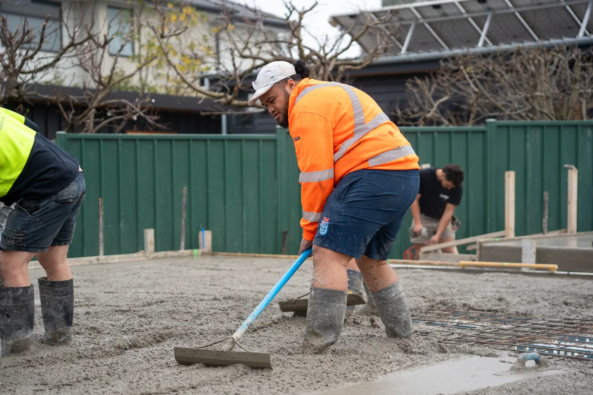
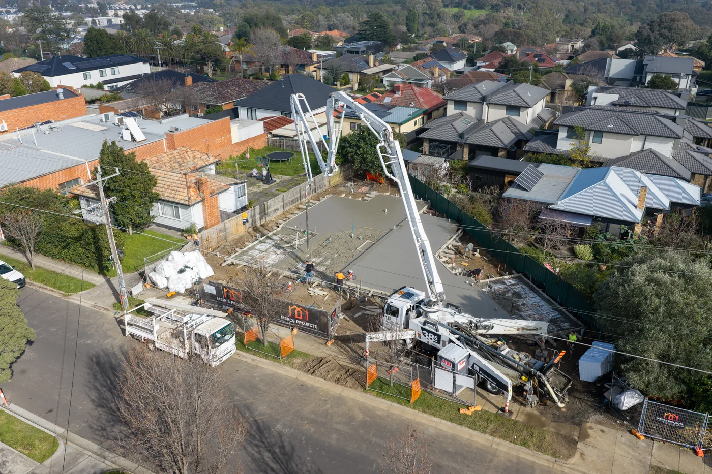

Most builders document a project the same way: a handful of phone photos, taken when someone remembers, usually because something went wrong and it needed recording.
Then the job finishes. The site gets cleaned up, the hoardings come down, and the only thing left is a completed building that looks like every other completed building. All the difficulty — the excavation, the tricky pour, the crane lift that took three weeks to plan — is invisible.
That's the problem with not filming construction site progress. The hardest work you do is the work nobody ever sees.
The finished building doesn't tell the story
A completed project shows the outcome. It doesn't show the capability.
When a developer is deciding who to award the next job to, “we built this” is a weaker argument than “here's how we built it.” Progress footage shows sequencing, safety, problem-solving and scale. It's the difference between a portfolio and proof.
This matters most on the projects that were genuinely hard. A basement dig through rock, a demolition next to a live school, a slab poured in a wet Melbourne winter. Nobody can tell any of that happened by looking at the finished product.
You can't go back and film a demolition after the building is gone.
Five reasons to film progress from day one
1. Tenders and capability statements
Most tender submissions look identical — same claims, same stock photos, same language about safety and quality. A 60-second progress film of a comparable project does more than three pages of text. If you're bidding for work with government, education or large developers, video in your capability statement is becoming an expectation rather than a differentiator.
2. Client confidence during the build
Developers and owners are spending millions and often can't visit site regularly. Monthly progress content — a short edit, a set of drone stills — keeps them informed and reassured. It also reduces the number of “how's it tracking?” phone calls, because the answer arrives before the question.
3. Dispute protection and site records
Progress footage is time-stamped evidence. What the ground actually looked like before excavation. What condition the neighbouring property was in. When a stage was genuinely completed. Most builders never need it. The ones who do are very glad it exists.
4. Recruitment
The construction industry has a labour problem, and part of it is perception. Young people don't see the work. Progress content — real sites, real machines, real scale — makes the industry look like what it actually is: technical, impressive and worth joining.
5. Social media that doesn't feel like advertising
Progress content performs better than finished-project content because it has movement, tension and change. People stop scrolling for an excavator taking down a structure. They don't stop scrolling for a photo of a finished façade. For builders, this is the most sustainable content there is — every project generates months of it automatically.


When to film across a build
The mistake is starting too late. By the time a project looks impressive, the most visually interesting stages are already buried — literally.
- Before works begin — the existing site, for the “before” comparison
- Demolition or excavation — usually the most dramatic footage of the entire job
- Structure going up — frame, slab pours, crane work, major lifts
- Milestone moments — topping out, façade installation, major deliveries
- Completion — the finished result, ideally including aerial and drone coverage
For a 12-month project, that's often as few as five or six shoot days spread across the year. It's not a constant commitment.
What one documented project produces
5–6 shoot days
That's a full year of marketing material generated by work you were doing anyway — and a permanent archive of every stage of the build.
The real cost of not filming
Every project you don't document is a project you can't show. Builders regularly finish landmark jobs — genuinely impressive, technically difficult work — and end up with nothing but a few phone photos and a completed building.
Filming site progress in Melbourne
At Strum Media we document construction, demolition, infrastructure and property projects across Melbourne and Victoria — progress video, photography, drone and FPV, plus the short-form content that keeps your social channels active while the build runs.
We work around site conditions, inductions and program constraints, and we understand that filming can't slow the job down. You can see how this plays out on the Clayton Business Park demolition and the Scotch Hill Gardens early works.
If you've got a project starting soon, the best time to plan the content is before the first machine arrives.